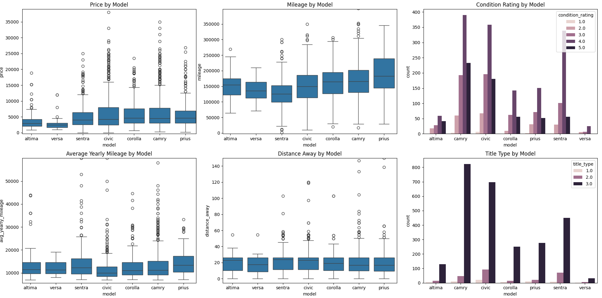
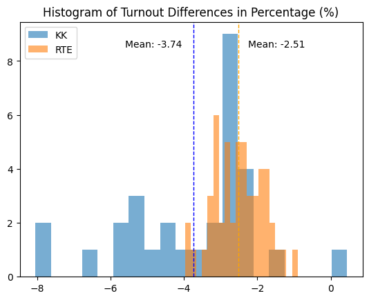
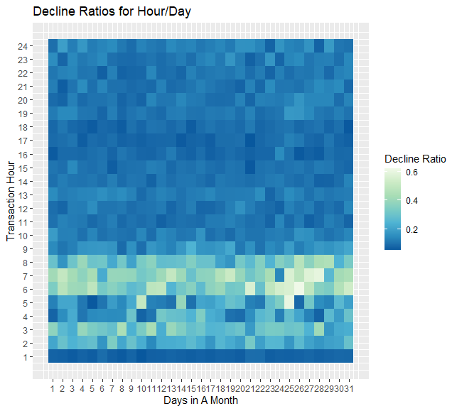
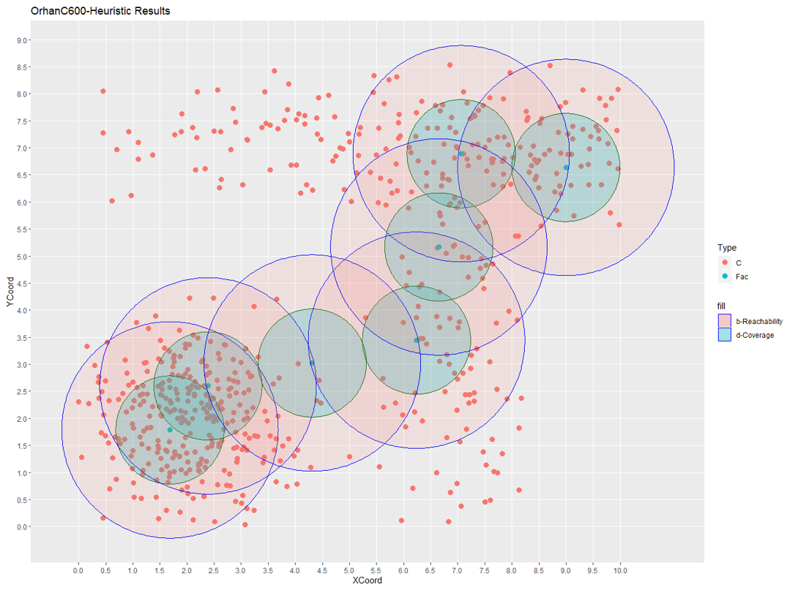

I build data-centric solutions for many industries. Specializing in ML, Optimization, and Analytics to drive better decisions.
Turns saved Instagram posts into a searchable database using vector search. Built for personal use.

An end-to-end pipeline that structures unstructured listing data using OCR & GPT. It ranks deals using PROMETHEE to find Pareto-optimal vehicles instantly.

Deep dive into the 2023 Turkish Presidential Elections. A data-driven investigation into opposition strategies using consecutive election datasets.

Revenue recovery system. Uses Random Forest to predict transaction success probabilities and optimize retry schedules for failed payments.

Custom C++ implementation of the NSGA-2 genetic algorithm to solve planar location problems, balancing multiple conflicting objectives efficiently.